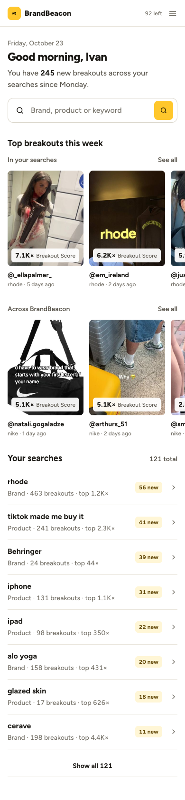

Small date line (e.g. "Friday, October 23"), then "Good morning, {first name}" by the user's local time (morning before 12, afternoon before 6 PM, then evening).
Line under it: "You have N new breakouts across your searches since Monday". N = all new breakouts across the user's searches since the Monday rerun.
Search bar and Find breakouts button are the same component as today. No chips on this Home.
Edge cases
N = 0: "No new breakouts yet this week. Your searches rerun every Monday."
New account with no searches yet: drop the count line, keep the greeting and search bar.
2
Middle of Home
Top breakouts this week: 2 rows you can slide
Build notes
Heading "Top breakouts this week", then two labeled rows, each a horizontal row of the existing video cards (thumbnail, Breakout Score, @handle, search name, posted age).
In your searches: this week's breakouts from the user's own searches, highest Breakout Score first, up to 12.
Across BrandBeacon: this week's highest-scoring breakouts across all of BrandBeacon, up to 12, leaving out any video already in the first row.
Desktop: 4 cards visible. The arrow buttons next to See all move by 4; the left arrow is disabled at the start. Phone: swipe sideways, no arrows.
See all on "In your searches" opens My Feed.
Edge cases
Fewer than 4 cards: show what there is, hide the arrows.
No breakouts in the user's searches this week (or no searches yet): hide the first row and keep Across BrandBeacon.
3
Bottom of Home
Your searches (8), then Show all
Build notes
Heading "Your searches" with the total on the right ("121 total").
8 rows, same row as today: search name, type, breakouts, top score, the yellow "N new" tag and an arrow. Order: most new this week first, then most recent.
"Show all N" under the list opens the search history page (4).
Edge cases
Fewer than 8 searches: show them all, no Show all.
A search still running shows the Processing state it has today.
Back to Home link, title "Search history", a short count line.
Sort: Most new (default), Most breakouts, Next refresh, A to Z. Tabs: All, Brands, Products.
Same rows as Home. 20 per page with Load more.
Edge cases
A tab with nothing in it: "No product searches yet."
5
Left menu
Keep the menu from the live app
Ivan, 23 Oct: use the menu that's on the left of the current BB. So no change: Home, My Feed, Searches (Ready tags), Analysis, Saved videos, the usage bars and the account card, exactly as live. The mock copies it for the screenshots only.
6
Phone
Phone width

390px.
Same order, one column. Both rows swipe sideways. The menu stays as it is on the live app at phone width.
?
Before you build
Questions
Across BrandBeacon cards show the search name under the handle (e.g. "nike"). That would show what other accounts searched. Use the brand or product the video is about instead?
See all on "Across BrandBeacon": there is no page for it yet. Hide the link for now, or point it somewhere?